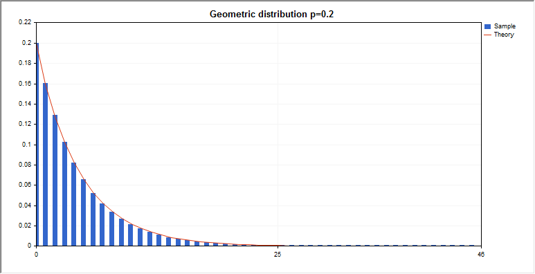
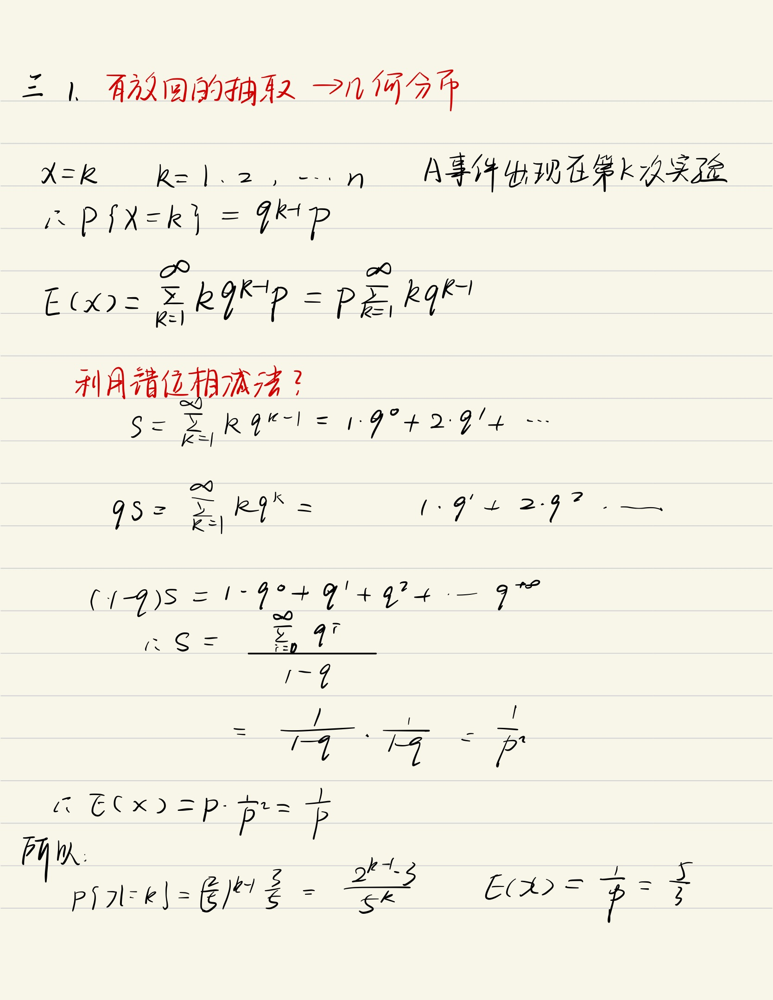
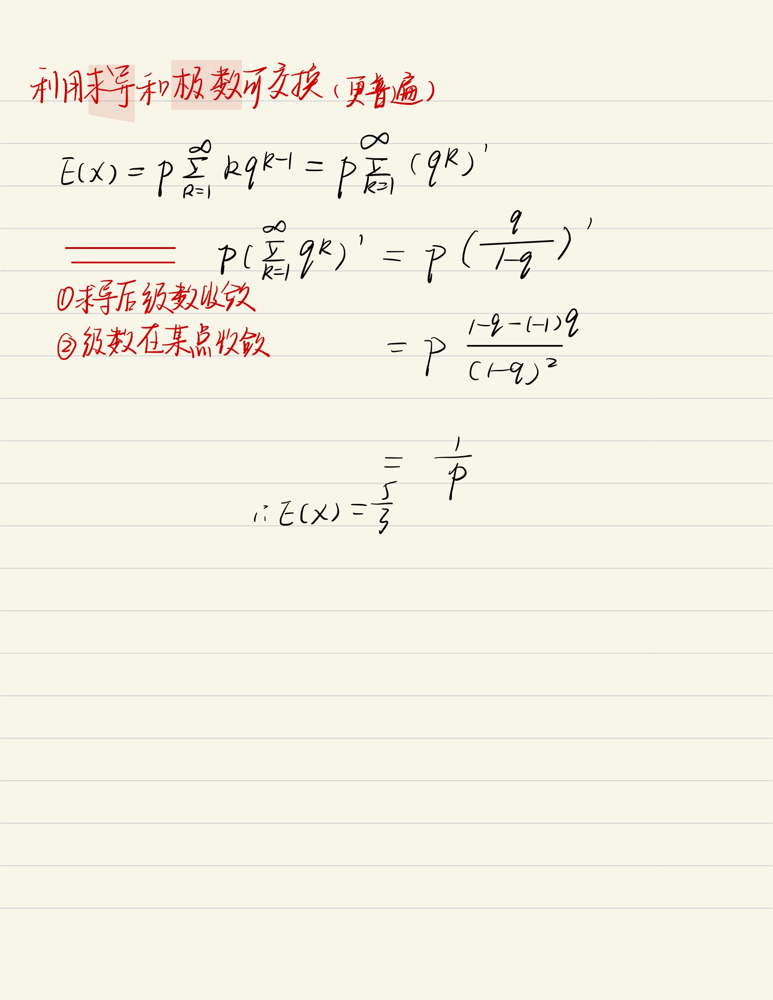

几何分布 假定我们有一系列伯努利试验，其中每一个的成功概率为p，失败概率为q=1−p。在获得一次成功前要进行多次试验？定义随机变量X为获得一次成功所需的试验次数。X的取值范围为{1,2,3…},且对于k≥1,因为一次成功前有k−1次失败,所以有Pr{X=k}=qk−1p这就是一种几何分布。定义随机变量X为获得一次成功所需的试验次数。X的取值范围为 \{1,2,3 \ldots\}, 且对于 k \geq 1, 因为一次成功前有 k-1 次失败, 所以有\\\\\operatorname{Pr}\{X=k\}=q^{k-1} p\\\\这就是一种几何分布。定义随机变量X为获得一次成功所需的试验次数。X的取值范围为{1,2,3…},且对于k≥1,因为一次成功前有k−1次失败,所以有Pr{X=k}=qk−1p这就是一种几何分布。数学期望E[X]=1/pE[X]=1 / pE[X]=1/pEX一批产品中包括6件正品，4件次品，现有放回的抽取，每次取一件，设X表示直至抽到正品为止所抽取的次数，求随机变量X的分布律和数学期望E（X)方差D[X]=q/p2\operatorname{D}[X]=q / p^{2}D[X]=q/p2